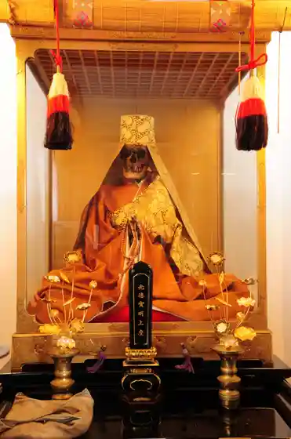
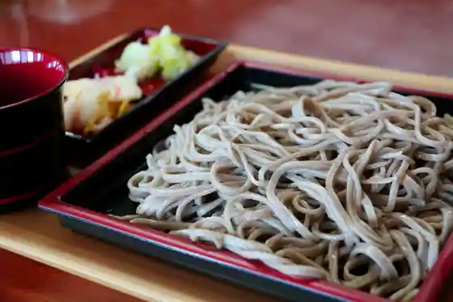
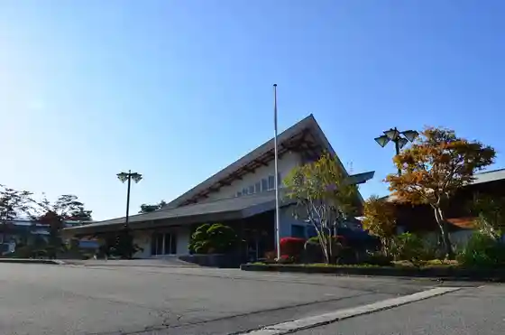

Roadside Station (Shirataka Yana Park) Ayu Chaya
Shirataka, Yamagata · 0238-85-5577 · Official / source link
Kura
Shirataka, Yamagata · 0238-85-1131 · Official / source link

Kakure Soba Village
Shirataka, Yamagata · 0238-86-0086 · Official / source link

Takano Yu Onsen Paresu Matsukaze
Shirataka, Yamagata · 0238-85-1001 · Official / source link

Kusurishi Zakura
Shirataka, Yamagata · 0238-86-0086 · Official / source link
Kibayashi Mori Kafe B&B
Shirataka, Yamagata · 0238-87-0033 · Official / source link
Wagashi Numazawa
Shirataka, Yamagata · 0238-85-2374 · Official / source link
Kurogamo Onsen
Shirataka, Yamagata · 0238-85-1135 · Official / source link
Izumi Kura In (Tendai Shu) / Oitama Sanju San Kannon Dai 16 Ban Ayukai Kannon
Shirataka, Yamagata · Official / source link
Hoshuyama Juo In (Tendai Shu) / Oitama Sanju San Kannon Dai 20 Ban Hotoke Saka Kannon
Shirataka, Yamagata · Official / source link
Sanno Yama Shingon In (Shingonshu) / Oitama Sanju San Kannon Dai 22 Ban Koya Kannon
Shirataka, Yamagata · Official / source link
Ofuka Yama Kannon Tera (Tendai Shu) / Oitama Sanju San Kannon Dai 8 Ban Miyama Kannon
Shirataka, Yamagata · Official / source link
Doriimu Noen Chokubai Tokoro
Shirataka, Yamagata · 0238-85-2922 · Official / source link
Furusato Forest Park
Shirataka, Yamagata · 0120-28-1004 · Official / source link
Keimei Yama Enkoji (Shingonshu) / Oitama Sanju San Kannon Dai 13 Ban Kan Tera Kannon
Shirataka, Yamagata · Official / source link
no Doka Village
Shirataka, Yamagata · 0238-85-0380 · Official / source link
Kama no Etsu no Village Park
Shirataka, Yamagata · 0238-86-0086 · Official / source link
O Noriyama Enpuku Tera (Shingonshu) / Oitama Sanju San Kannon Dai 7 Ban Takadama Kannon
Shirataka, Yamagata · Official / source link
Washi Suki, Shikishi Zukuri / Shirataka
Shirataka, Yamagata · 0238-85-3426 · Official / source link
Mitake Eisen Tera (Soto Shu) / Oitama Sanju San Kannon Dai 9 Ban Sugisawa Kannon
Shirataka, Yamagata · Official / source link
Roman to Dento no Tsubute Ishi
Shirataka, Yamagata · 0238-86-0086 · Official / source link
Zuiryu In
Shirataka, Yamagata · 0238-86-0086 · Official / source link
Shonen Tera Joroku Jizo
Shirataka, Yamagata · 0238-86-0086 · Official / source link
Yamaguchi Shogaku Sakura
Shirataka, Yamagata · 0238-86-0086 · Official / source link
Komori Do no Sakura
Shirataka, Yamagata · 0238-86-0086 · Official / source link
Paraguraida Tandemufuraito
Shirataka, Yamagata · 0238-87-2500 · Official / source link
Sen Ri Iori
Shirataka, Yamagata · 0238-87-2087 · Official / source link
Asahiyama So In (Shingonshu) / Oitama Sanju San Kannon Dai 27 Ban Takaoka Kannon
Shirataka, Yamagata · Official / source link
Ho Da Yama Oka O Tera (Soto Shu) / Oitama Sanju San Kannon Dai 29 Ban Matsuoka Kannon
Shirataka, Yamagata · Official / source link
Shirataka Ei Ski Area
Shirataka, Yamagata · 0238-85-6147 · Official / source link
Nochi Iori Zakura
Shirataka, Yamagata · 0238-86-0086 · Official / source link
Akasaka no Kusurishi Zakura
Shirataka, Yamagata · 0238-86-0086 · Official / source link
Yamari Kashi Ho
Shirataka, Yamagata · 0238-85-2146 · Official / source link
Togei Kyoshitsu (Miyama Yaki Miyama Kobo Tsuchi Dango)
Shirataka, Yamagata · Official / source link
Saijo Kawa Kyoryo (Arato Tekkyo)
Shirataka, Yamagata · 0238-86-0086 · Official / source link
Juni Cherry Blossoms
Shirataka, Yamagata · 0238-86-0086 · Official / source link
Yaotome Tanemaki Zakura
Shirataka, Yamagata · 0238-86-0086 · Official / source link
Sobakiri Hachi Sun
Shirataka, Yamagata · 0238-85-1083 · Official / source link
Kikuchi Seimen
Shirataka, Yamagata · 0238-85-2166 · Official / source link
Dono Nyu Zakura
Shirataka, Yamagata · 0238-86-0086 · Official / source link
Marukawa Chikusan Niku no Marukawa
Shirataka, Yamagata · 0238-85-5411 · Official / source link
San Tsu Taki Fudo Mikoto
Shirataka, Yamagata · 0238-86-0086 · Official / source link
Nii no
Shirataka, Yamagata · 0238-85-0011 · Official / source link
Abe Workshop
Shirataka, Yamagata · 0238-85-0270 · Official / source link
Higuchi
Shirataka, Yamagata · 0238-85-2189 · Official / source link
Kuma Ya
Shirataka, Yamagata · 0238-85-4545 · Official / source link
Kissa Shokuji
Shirataka, Yamagata · 0238-85-5493 · Official / source link
Ebina Kashi Ho
Shirataka, Yamagata · 0238-85-2025 · Official / source link
San Tsu Taki
Shirataka, Yamagata · 0238-85-6126 · Official / source link
Niwa Watari Dainichi Do
Shirataka, Yamagata · 0238-86-0086 · Official / source link
Itaria Ryori Shattaka
Shirataka, Yamagata · 0238-85-0910 · Official / source link
Anchin Do
Shirataka, Yamagata · 0238-85-3018 · Official / source link
San Farm Shirataka
Shirataka, Yamagata · 0238-85-0830 · Official / source link
Shirataka Natto Mise
Shirataka, Yamagata · 0238-85-2139 · Official / source link
Shimizuya Saketen
Shirataka, Yamagata · 0238-85-3111 · Official / source link
Shirataka Sanchoku Aina Kan
Shirataka, Yamagata · 0238-85-5731 · Official / source link
Shirataka Tabisaki Annainin
Shirataka, Yamagata · 0238-86-0086 · Official / source link
Noka no Tsukemono Workshop O Fuku Ro
Shirataka, Yamagata · 0238-85-0504 · Official / source link
Hase Taki
Shirataka, Yamagata · 0238-85-6126 · Official / source link
Chukaryori Kita Ro
Shirataka, Yamagata · 0238-85-4832 · Official / source link
Nagomi Workshop
Shirataka, Yamagata · 0238-85-0065 · Official / source link